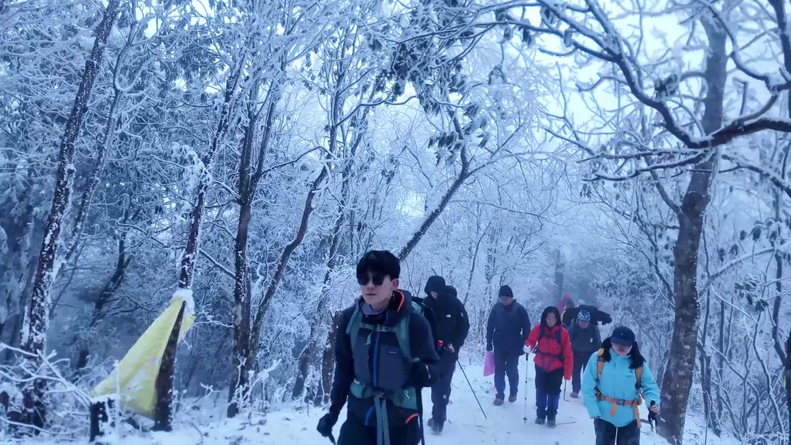
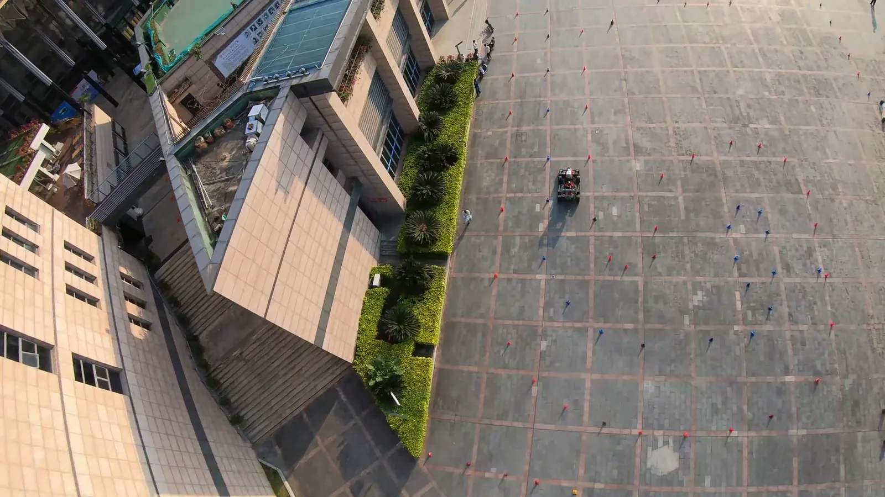
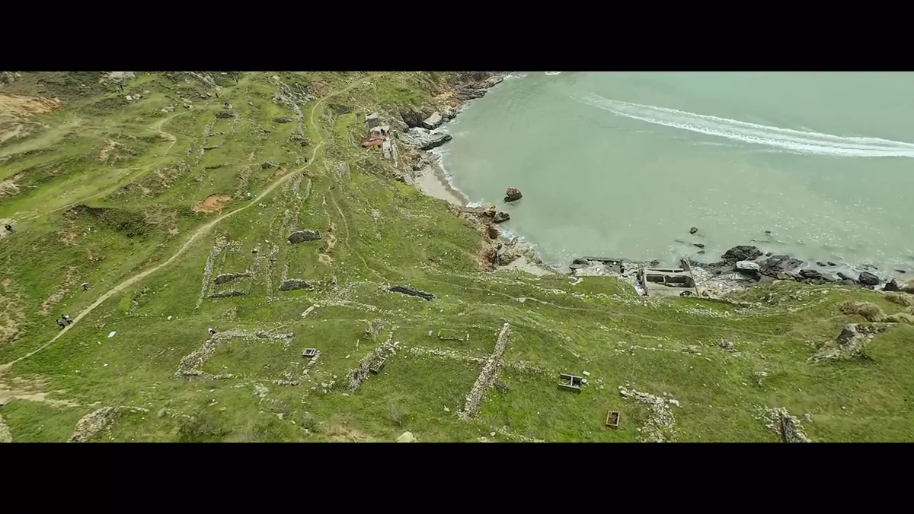
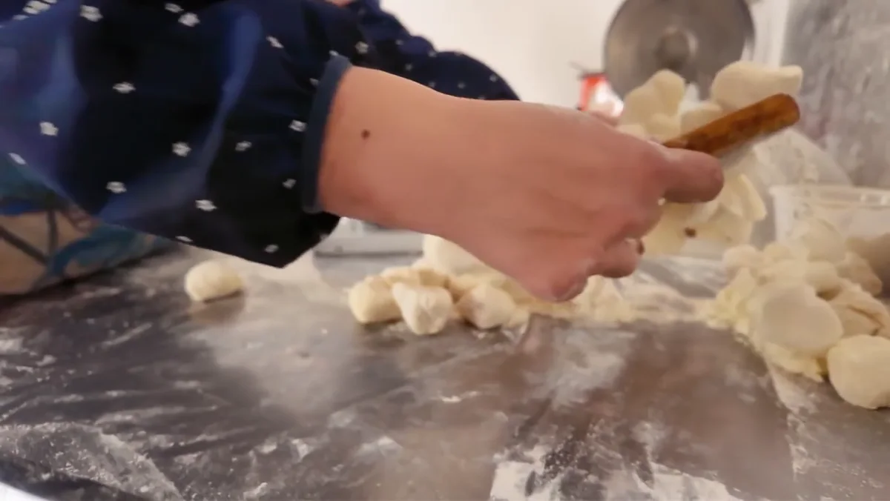
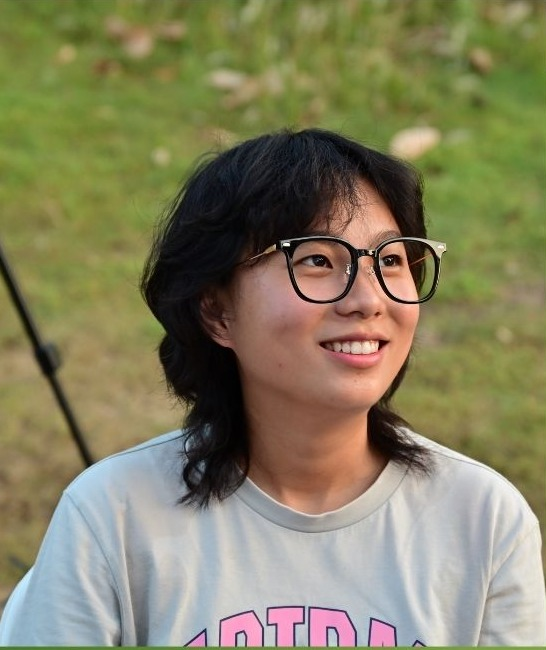

01 / 2026
反穿武功山
WINTER CROSSING, WUGONG MOUNTAIN
- TYPE
- 旅行纪实影像
- ROLE
- 联合摄影｜独立剪辑
记录一次冬季反穿武功山的旅程。在雪林、浓雾、低温和复杂山地环境中，围绕人物行进、环境变化与旅途状态完成影像记录。
约95%素材由本人拍摄；本人出现在画面中的部分镜头由同行成员拍摄。五人同行，本人负责全片剪辑。
VISUAL STORYTELLING / CAMERA · EDIT
实习摄影申请
我进入真实场景，记录人物、动作与正在发生的生活。
福州大学｜2027届
可随时到岗｜杭州｜每周5天｜可连续实习约6个月

SELECTED WORK / 202601 / SHOWREEL
章紫琼 / NIKS
本片涵盖旅行纪实、校园社团、运动、生活方式及航模影像。
本人在不同项目中承担独立摄影、联合摄影、前期策划、现场执行及后期剪辑等职责；部分画面来自团队联合创作，具体职责见项目说明。
02 / PROJECTS
三组真实场景中的拍摄实践

01 / 2026
WINTER CROSSING, WUGONG MOUNTAIN
记录一次冬季反穿武功山的旅程。在雪林、浓雾、低温和复杂山地环境中，围绕人物行进、环境变化与旅途状态完成影像记录。
约95%素材由本人拍摄；本人出现在画面中的部分镜头由同行成员拍摄。五人同行，本人负责全片剪辑。

02 / 2026
INSIDE THE AVIATION CLUB
围绕航模协会成员、飞行器准备、飞行活动和社团生活完成的团队影像项目。
约70%素材由社团成员联合拍摄。本人负责前期策划、约30%现场摄影、素材组织和后期剪辑；部分航拍及穿越机画面由团队成员完成。本人曾用一周独立组装一套穿越机。

03 / 2026
A MORNING IN THE KITCHEN
在真实营业环境中记录工作人员状态，以及揉面、切面、制作和出餐过程，完成一支生活化餐饮影像。
重点观察手部动作、劳动节奏与真实后厨空间，以近景细节建立食物制作的触感。
03 / VISUAL STUDIES
在日常场景中进行的单镜头影像练习，关注人物细节、空间构图、移动和色彩。全部由章紫琼使用 iPhone 17 Pro 独立拍摄并调色，调色工具为飓风相机。
01 / SINGLE SHOT
人物动作与色彩习作
02 / SINGLE SHOT
空间、移动与框中框习作
03 / SINGLE SHOT
低照度与室内氛围习作
04 / PERSONAL CONTENT PRACTICE
「小想」是我独立运营的个人内容账号，主要记录校园生活、社团体验、旅行与人物故事。
我独立完成选题策划、现场拍摄、出镜沟通、素材管理、剪辑、基础调色和多平台发布，并结合完播率、互动与评论反馈持续复盘内容。
这段实践让我熟悉了从想法到成片交付的完整流程，也锻炼了在轻量设备、有限人员和真实场景中快速完成内容的能力。
05 / ABOUT
我是章紫琼，创作者名字是 NIKS，福州大学法学专业2027届本科生。
我持续参与旅行纪实、校园社团、运动和生活方式内容的拍摄与剪辑，也曾在海南万宁从事摄影剪辑相关工作。我习惯进入陌生环境，与人物建立联系，并在人员、时间和现场条件有限的情况下完成拍摄、素材整理和后期交付。
过去几年我把较多精力投入剪辑和内容完成，现在正在重新加强摄影本身，希望进入更专业的制作现场，学习机位、灯光、器材管理、素材流程和团队协作。

人物与旅行纪实
校园与社团影像
运动与现场拍摄
航模及穿越机影像
Nikon ZR
DJI RS 3
星环35穿越机
DaVinci Resolve / 剪映
独立与联合摄影
前期策划与现场执行
短视频剪辑与叙事
素材整理与基础调色
06 / RESUME
07 / CONTACT